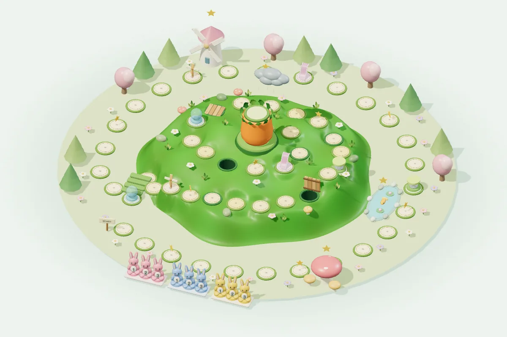

小兔闯关
免费在线玩小兔闯关：翻牌移动兔子，躲开地洞和机关，率先登上胡萝卜山顶。2 至 4 人同屏棋盘冒险，支持电脑对手与刷新续玩，约 10 至 20 分钟一局，手机和平板也能玩。
2–4 人同屏游玩，约 10–20 分钟一局。

玩法
- 每队三只兔子，轮流翻牌，再选择一只兔子按卡牌步数前进。
- 胡萝卜机关会切换地洞和木桥，地图中还有跳台、陷阱和护盾。
- 任意一只兔子率先登顶，或成为最后存活的队伍，即可获胜。
- 可配置 2 至 4 个真人或电脑席位，支持电脑自动对战及刷新续玩。
喜欢翻牌、棋盘冒险和机关带来的变化，或有十几分钟想与家人朋友一起玩时，可以考虑小兔闯关。